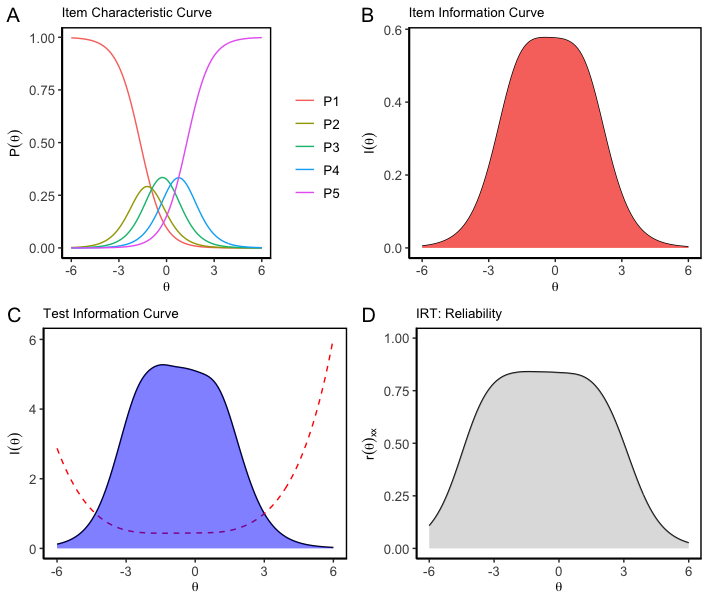
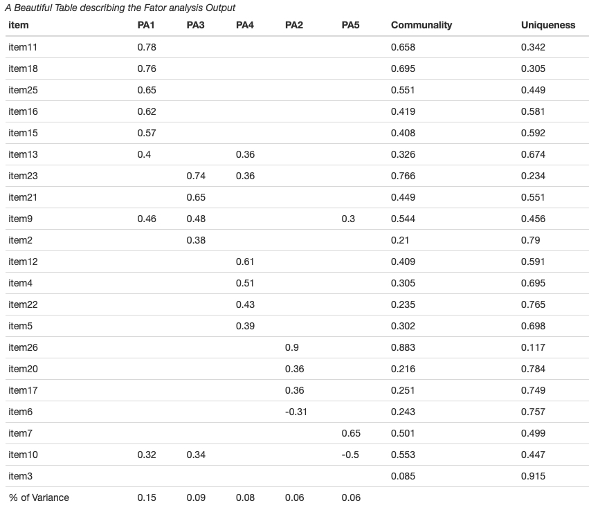

This package is a companion R package for the Book ” Basic and Advanced Psychometrics in R” [work in Progress]
This package includes data-frames and some interesting functions to create publication-friendly summary tables for factor analysis, confirmatory factor analysis and item analysis.
Installation
You can install stable version from CRAN
install.package("tabledown")You can install the development version of tabledown from GitHub with:
# install.packages("devtools")
devtools::install_github("masiraji/tabledown")Examples
Creating Publication Ready Plots for Item Response Theory (IRT) Models.
IRT analysis is highly depended on visual representation of the model parameters. mirt package provides lots of useful functions to conduct IRT analysis. tabledown package offers ggplot2 based plotting options using mirt package based model parameters to facilitate the customization of the plots.
Let’s create a APA publication focused ggplot theme for our plots:
library(ggplot2)
#Creating a custom theme to be used for the plots
apatheme=theme_bw()+
theme(panel.grid.major=element_blank(),
panel.grid.minor=element_blank(),
panel.background=element_blank(),
axis.text.x=element_text(size=10),
axis.text.y=element_text(size=10),
axis.title.x=element_text(size=10),
axis.title.y=element_text(size=10),
plot.title=element_text(siz=10),
legend.text=element_text(size=10),
legend.title=element_blank(),
axis.line.x=element_line(color='black'),
axis.line.y=element_line(color='black'),
panel.border=element_rect(color="black",
fill=NA,
size=1))Here we used FFMQ.CFA data frame which is a demo-validation data for Five Facet Mindfulness Questionnaire.
#Load the data
data <- tabledown::FFMQ.CFA %>% dplyr::select(item1, item6, item11, item15, item20, item26, item31, item36)We used mirt package to run our unidimensional IRT model.
#Conduct the IRT analysis using mirt package
model <- mirt::mirt(data, model=1, itemtype='graded',
SE=TRUE, Se.type ='MHRM',
technical=list(NCYCLES=10000))Let’s create some item response theory based plots know about test information. item characteristic, item information and reliability curve.
Plot Item Characteristic Curve (ICC)
tabledown offers ggicc function to create ggplot2 based Item Characteristic Curve. ggicc function takes three arguments (a) model: your IRT model (B) item number (C) Theta range: ggicc use a symmetric theta range. Theta = 6 will plot the ICC with a theta range of -6 to 6.
icc <- tabledown::ggicc(model, 2, 6)+apathemePlot Item Information Curve (IIC)
tabledown offers ggiteminfo function to create ggplot2 based item information curve. The arguments for ggiteminfo are similar to the arguments ofggicc function
iic <- tabledown::ggiteminfo(model, 2, 6)+geom_area()+aes(fill = "#E64B3599")+theme(legend.position="none")+apathemePlot Test Information Curve (TIC)
tabledown also offers ggitestinfo and ggitestinfo_se function to create ggplot2 based test information curve. ggitestinfo_se will give you a test information plot with standard error of measurement. The arguments for ggiteminfo are similar to the arguments ofggicc function
tic <- tabledown::ggtestinfo_se(data, model)+labs(title="Test Information Curve")+geom_area(fill="blue", alpha=.5)+apathemePlot Reliability Curve
Using ggreliability function a reliability curve can easily developed.
reliability <- tabledown::ggreliability(data, model)+labs(title="Reliability Curve")+geom_area(fill="grey", alpha=.5)+apatheme
Creating A Summary Table for Factor Analysis
Commonly it is very difficult to create a publication friendly table that summaries all necessary information of a factor analysis. This example will help you in that pursuit with the help of fac.tab() function
library(tabledown)
library(tidyverse)
library(psych)
library(papaja)
Load the data from tabledown package
data <- tabledown::Rotter[, 11:31]
Create a correlational matrix to compute factor analysis
correlations <- psych::polychoric(data, correct=0)
fa.5F.1 <- psych::fa(r=correlations$rho, nfactors=5, fm="pa",rotate="varimax",
residuals=TRUE, SMC=TRUE, n.obs =428)
table <- tabledown::fac.tab(fa.5F.1, .3, complexity = F)
papaja::apa_table(table, caption="A Beautiful Table describing the Fator analysis Output ")
Creating A Summary Table of Fit indices in Confirmatory Factor Analysis
When reporting the confirmatory factor analysis results, modern psychometrics suggest fitting several possible structural models of the latent construct and reporting the fit indices for them. lavaan package does a fantastic job doing the confirmatory factor analysis. Here we will see how to create a publication friendly summary of fit indices from several fitted models using cfa.tab.multi() function.
{Load required packages}
library(tabledown)
library(tidyverse)
library(lavaan)
library(papaja)
load the data
data <- tabledown::FFMQ.CFA
First CFA model
FF.model.Original <-
"Observe =~ item1 + item6 + item11 + item15 +item20 + item26 + item31 + item 36
Describe =~ item2 + item7 + Ritem12 + Ritem16 + Ritem22 + item27 +
item32 + item37
Awareness =~ Ritem5 + Ritem8 + Ritem13 + Ritem18 + Ritem23 + Ritem28 + Ritem34 + Ritem38
Nonjudge =~ Ritem3 + Ritem10 + Ritem14 + Ritem17 + Ritem25 + Ritem30+ Ritem35 + Ritem39
Nonreact =~ item4 + item9 + item19 + item21 + item24 + item29 + item33 "
fit.original <- lavaan::cfa(FF.model.Original, data=data, estimator="MLR", mimic="Mplus")
Second CFA Model
FF.model.Cor <- "Observe =~ item1 + item6 + item11 + item15 +item20 + item26 + item31 + item 36
Describe =~ item2 + item7 + item27 + item32 + item37
Awareness =~ Ritem5 + Ritem8 + Ritem13 + Ritem18 + Ritem23 +Ritem28 + Ritem34
Nonjudge =~ Ritem10 + Ritem14 + Ritem25 + Ritem30+ Ritem35
Nonreact =~ item4 + item9 + item19 + item21 + item24 + item29 + item33
Ritem28 ~~ Ritem34
Ritem23 ~~ Ritem34"
fit.Cor <- lavaan::cfa(FF.model.Cor, data = data, estimator = "MLR", mimic = "Mplus")
Third CFA Model
FF.short <- "Observe =~ item36 + item26 +item20 + item11
Describe =~ item2 + item7 + item27 + item32
Awareness =~ Ritem8 + Ritem13 + Ritem23 + Ritem28
Nonjudge =~ Ritem10 + Ritem25 + Ritem30 + Ritem35
Nonreact =~ item9 + item19 + item21 + item24"
fit.short <- lavaan::cfa(FF.short, data=data, estimator="MLR", mimic="Mplus")
# Creating Summary table of fit indices from three fitted model (lavaan class objects)
table <- cfa.tab.multi(fit.original, fit.Cor, fit.short, robust= TRUE)
papaja::apa_table(table, caption="A Beautiful Table describing the Fit Indices of Three Fitted Model")Creating Summary Table for Item Analysis
In psychometrics conducting item-analysis is very common. psych packages have provided enough tools to run the item analysis smoothly. Here we will create a publication friendly summary table of item analysis with all necessary information using function des.tab()
library(tabledown)
library(tidyverse)
library(psych)
data <- tabledown::Rotter[, 11:31]
table <- des.tab(data) papaja::apa_table(table, caption="A Beautiful Table Summarizing the Output of Item Analysis")